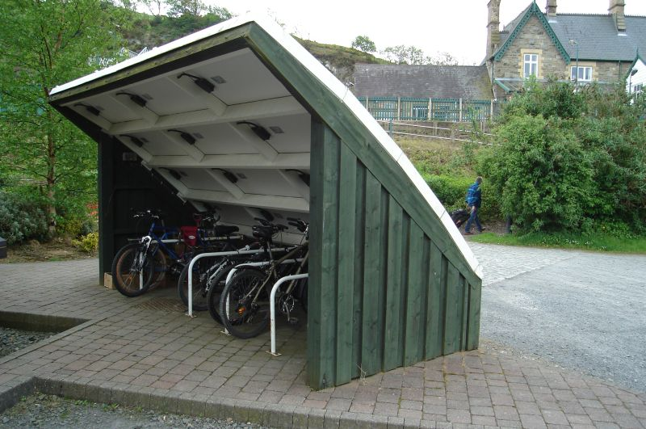

|
|
|
Sponsored Link •
|
Summary
In this episode I add another item to the macro programmer toolkit (macros taking macros as arguments) and I bring an argument in favor of good old parentheses.
|
Advertisement
|
There is no limit to the sophistication of macros: for instance, it is possible to define higher order macros, i.e. macros taking other macros as arguments or macros expanding into other macros. Higher order macros allow an extremely compact and elegant programming style; on the other hand, they are exposed to the risk of making the code incomprehensible and pretty hard to debug. I have already shown an example of macro expanding into a macro transformer in episode 22, and explained the intricacies of the tower of meta-levels; in this episode instead I will consider a much simpler class of higher order macros, macros taking macros as arguments. Moreover, I will spend some time discussing the philosophy of Scheme and explaining the real reason why there are so many parentheses.
Most programmers are used to work with a finished language. With finished, I mean that the language provides not only a basic core of functionalities, but also a toolbox of ready-made solutions making the life of the application programmer easier. Notice that here I am not considering the quality of the library coming with the language (which is extremely important of course) but language-level features, such as providing syntactic sugar for common use cases.
As a matter of fact, developers of the XXIth century take for granted a lot of language features that were uncommon just a few years ago. This is particularly true for developers working with dynamic languages, which are used to features like built-in support for regular expressions, a standard object system with a Meta Object Protocol, a Foreign Function Interface, a sockets/networking interface, support for concurrency via microthread and native threads and multiprocesses and more; nowadays even Javascript has list comprehension and generators!
Modern finished languages spoil the programmer, and this is the reason why they are so much popular. Of course not all finished languages are equivalent, and some are more powerful and/or easier to use than others. Some programmers will prefer Python over Java, others will prefer Ruby, or Scala, or something else, but the concept of finished language should be clear. On the other hand Scheme, at least as specified in the R6RS standard - I am not talking about concrete implementations here - is missing lots of the features that modern languages provide out the box. Compared to the expectations of the modern developer, Scheme feels very much like an unfinished language.
I think the explanation for the current situation is more historical and social than technical. On one hand, a lot of people in the Scheme world want Scheme to stay the way it is, i.e. a language for language experimentations and research more than a language for enterprise work (for instance a standard object system would effectively kill the ability to experiment with other object systems and this is not wanted). On the other hand, the fact that there are so many implementations of Scheme makes difficult/impossible to specify too much: this the reason why there are no standard debugging tools for Scheme, but only implementation-specific ones.
Even if the Scheme language has been left unfinished - does not matter if by choice or out of necessity - it has been equipped with a built-in mechanism enabling the user to finish the language according to his/her preferences. Such a mechanism is of course the mechanism of macros. Actually, one of the main use of macros is to fill out the deficiencies left out by the standard. Most people nowadays prefer to have ready-made solutions, because they have deadlines, projects to complete and no time nor interest in writing things that should be made by language designers, so they dismiss Scheme immediately after having having read the standard specification.
However, one should make a distinction: while it is true that Scheme - in the sense of the language specified by the R6RS standard - is unfinished, concrete implementations of Scheme tends to be much more complete. If you give up portability and you marry a specific implementations you get all the benefit of a "finished" language. Consider for instance PLT Scheme, or Chicken Scheme, which are two big Scheme implementations: they have support for every language-level feature you get in a mainstream language and decent size libraries so that they are perfectly usable (and used) for practical tasks you could do with Python or Ruby or even a compiled language. Another option if you want to use Scheme in an enterprise context is to use a Scheme implementation running on the Java virtual machine (SISC, Kawa ...) or on the .NET platform (IronScheme). Alternatively, you could use a Scheme-like language such as Clojure, developed by Rich Hickey.
Clojure runs on the Java Virtual Machine, it is half lisp and half Scheme, it has a strong functional flavour in it, and an interesting support to concurrency. It also shares the following caracteristics with Python/Ruby/Perl/...:
Such caracteristics make Clojure very appealing. However, personally I have no need to interact with the Java platform professionally (and even there I would probably choose Jython over Clojure for reason of greater familiarity) so I have not checked out Clojure and I have no idea about it except what you can infer after reading its web site. If amongst my readers there is somebody with experience in Clojure, please feel free to add a comment to this article. I personally am using Scheme since I am interested in macrology and no language in existence can beat Scheme in this respect. Also, I am using for Scheme for idle speculation and not to get anything done ;-)
A typical example of idle speculation is the following question: can we find a way to reduce the number of parentheses required in Scheme? Finding tricks for reducing parentheses is a pointless exercise per se, but it gives a reason to teach a few other macro programming techniques - in particular second order macros taking macros as arguments - and to explain why parentheses are actually good and should not be removed.
In episode 25 I defined a recursive cond- macro taking less parentheses than a regular cond, using an accumulator. Here I will generalize that approach, by abstracting the accumulator functionality into a second order macro, called collecting-pairs, which takes as input another macro and a sequence of arguments, and calls the input macro with the arguments grouped in pairs. That makes it possible to call with less parentheses any macro of the form (macro expr ... (a b) ...), by calling it as (collecting-pairs (macro expr ...) a b ...).
Here is the code implementing collecting-pairs:
(def-syntax collecting-pairs
(syntax-match ()
(sub (collecting-pairs (name arg ...) x1 x2 ...)
#'(collecting-pairs "helper" (name arg ...) () x1 x2 ...))
(sub (collecting-pairs "helper" (name arg ...) (acc ...))
#'(name arg ... acc ...))
(sub (collecting-pairs "helper" (name arg ...) (acc ...) x)
#'(syntax-violation 'name "Mismatched pairs" '(name arg ... acc ... x) 'x))
(sub (collecting-pairs "helper" (name arg ...) (acc ...) x1 x2 x3 ...)
#'(collecting-pairs "helper" (name arg ...) (acc ... (x1 x2)) x3 ...))
))
collecting-pairs can be used with many syntactic expressions like cond, case, syntax-rules, et cetera. Here is an example with the case expression:
> (collecting-pairs (case 1)
(1) 'one
(2) 'two
(3) 'three
else 'unknown))
one
Using a second order macro made us jump up one abstraction level, by encoding the accumulator trick into a general construct that can be used with a whole class of cond-style forms. However, collecting-pairs cannot do anything to reduce parentheses in let-style forms. To this aim we can introduce a different second order macro, such as the following "colon" macro:
(def-syntax : ; colon macro
(syntax-match ()
(sub (: let-form e); do nothing
#'e)
(sub (: let-form e1 e2)
(syntax-violation ': "Odd number of arguments" #'let-form))
(sub (: let-form patt value rest ... expr)
#'(let-form ((patt value)) (: let-form rest ... expr))
(identifier? #'let-form)
(syntax-violation ': "Not an identifier" #'let-form))
))
The colon macro expects as argument another macro, the let-form, which can be any binding macro such that (let-form ((patt value) ...) expr) is a valid syntax. For instance (let ((name value) ...) expr) can be rewritten as (: let name value ... expr), by removing four parentheses. Here is a test with let*:
(test "colon-macro" (: let* x 1 y x (+ x y)) 2)
The latest version of the aps package provides a colon : form in the (aps lang) module. In the following Adventures I will never use collecting-pairs and : since I actually like parentheses. The reason is that parens make it easier to write macros with pattern matching techniques, as I argue in the next paragraph.
Paren-haters may want to use collecting-pairs and the colon macro to avoid parentheses. They may even go further, and rant that the basic Scheme syntax should require less parentheses. However, that would be against the Scheme philosophy: according to the Scheme philosophy a programmer should not write code, he should write macros writing code for him. In other words, automatic code generation is favored over manual writing.
When writing macros, it is much easier to use a conditional with more parentheses like cond than a conditional with less parentheses like cond-. The parentheses allows you to group expressions in group that can be repeated via the ellipsis symbol; in practice, you can write things like (cond (cnd? do-this ...) ...) which cannot be written with cond-. On the other hand, different languages adopt different philosophies; for instance Paul Graham's Arc uses less parentheses. This is possible since it does not provide a macro system based on pattern matching (which is a big minus in my opinion).
Is it possible to have both a syntax with few parentheses for writing code manually and a syntax with many parentheses for writing macros? Clearly the answer is yes: the price to pay is to double the constructs of the language. Python is an example of such a language with a two-level syntax: it provides both a simple syntax, limited but able to cover the most common case, and a fully fledged syntax, giving all the power you need, which however is used rarely. For instance, here a table showing some of the most common syntactic sugar used in the Python language:
| Simplified syntax | Full syntax |
|---|---|
| obj.attr | getattr(obj, 'attr') |
| x + y | x.__add__(y) |
| c = C() | c = C.__new__(C); c.__init__() |
In principle, the Scheme language could follow exactly the same route, by providing syntactic sugar for the common cases and a low level syntax for the general case. For instance, in the case of the conditional syntax, we could have a fully parenthesized __cond__ syntax for usage in macros and cond syntax with less parens for manual usage. That, in theory: in practice Scheme only provides the low level syntax, leaving to the final user the freedom (and the burden) of implementing his preferred high level syntax. Since syntax is such a subjective topic, in practice I think it is impossible for a language designed by a committee to converge on an high level syntax. This is a consequence of the infamous bikeshed effect.
The bikeshed effect is typical of any project designed by a committee: when it comes to proposing advanced functionalities that very few can understand, it is easy to get approval from the larger community. However, when it comes to simple functionality of common usage, everybody has got a different opinion and it is practically impossible to get anything approved at all.
To avoid that, the standard does not provide directly usable instruments: instead, it provides general instruments which are intended as building blocks on that of which everybody can write the usable abstractions he/she prefers. On the other hand Lisp-like languages designed by a BDFL (like Arc and Clojure) provide a high level syntax, which is the one the BDFL like. You may try it and see if you like it. Good luck!
Have an opinion? Be the first to post a comment about this weblog entry.
If you'd like to be notified whenever Michele Simionato adds a new entry to his weblog, subscribe to his RSS feed.
 | Michele Simionato started his career as a Theoretical Physicist, working in Italy, France and the U.S. He turned to programming in 2003; since then he has been working professionally as a Python developer and now he lives in Milan, Italy. Michele is well known in the Python community for his posts in the newsgroup(s), his articles and his Open Source libraries and recipes. His interests include object oriented programming, functional programming, and in general programming metodologies that enable us to manage the complexity of modern software developement. |
|
Sponsored Links
|